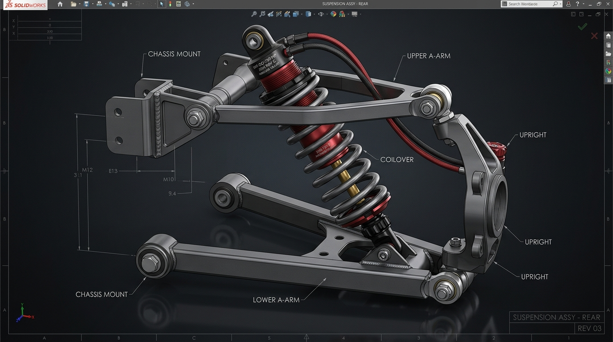
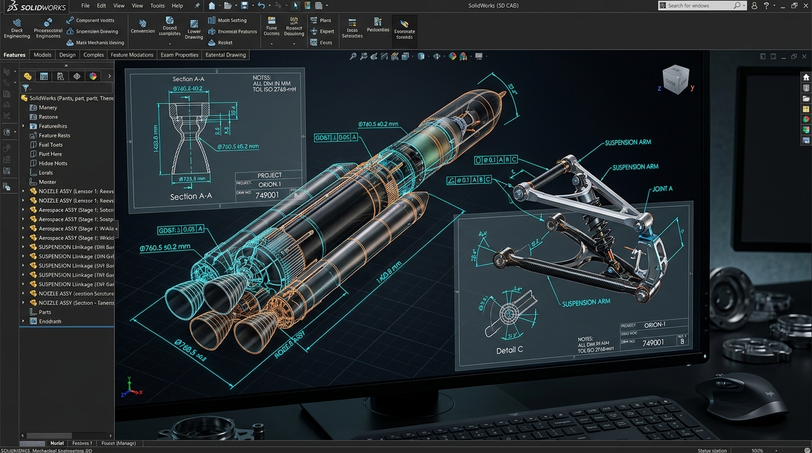
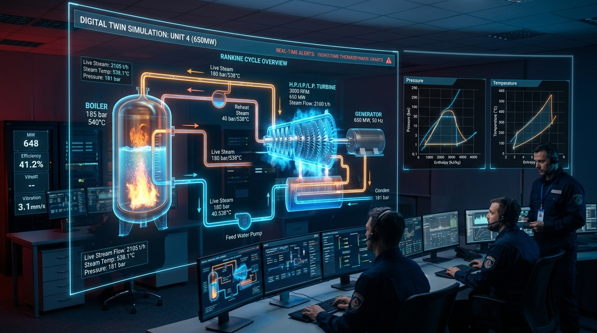

محمدامین شریف

اصول مدیریت کسبوکار برای ذهن مهندسی
راهنمای مطالعاتی کاربردی ویژهی دانشجویان مهندسی — از ماتریس تصمیمگیری تا مدل بوم کسبوکار؛ ابزارهایی که تحلیل عددی و منطقی مهندسان را به تصمیمهای تجاری بهتر تبدیل میکند.
All Engineering Projects & Workspaces
Explore 12+ real-world engineering projects: Turbomachinery, CFD, SolidWorks CAD, and Digital Twins
 TURBO // CFTURBO
TURBO // CFTURBO
 CFD // FLUENT
TURBO // CFD
CFD // FLUENT
TURBO // CFD
 CFD // MULTIPHASE
CFD // MULTIPHASE
 CAD // SOLIDWORKS
CAD // SOLIDWORKS

CAD // SOLIDWORKS
CAD // SOLIDWORKS
TWIN // SIMULATION
TWIN // 3D PUMP
 LAB // NAVIER-STOKES
LAB // NAVIER-STOKES
 TWIN // BOILER
TWIN // BOILER
 TWIN // HYDRAULICS
TWIN // HYDRAULICS
Scientific Reference Library (08 Volumes & Monograph)
Engineering Through Simulation
Research Interests
Let's Build Something Amazing
Interested in engineering, simulation, research, or collaboration? Feel free to reach out!
Pump Design Checklist in CFturbo
Comprehensive 6-stage impeller & 5-stage volute design protocol from 1D sizing to 3D blades.
Flow Around a Cylinder (ANSYS Fluent)
Unsteady vortex shedding analysis, Strouhal number St=0.21, lift & drag coefficient tracking.
Turbine Blade & Impeller Optimization
Multi-objective blade angle β2 parameterization, cavitation inception avoidance, and hydraulic efficiency boost.
Two-Phase Gas-Liquid Flow in Pipe
Volume of Fluid (VOF) interface reconstruction, slug-to-annular regime transition, and pressure drop.
Model Rocket Multi-Stage Assembly
Multi-part aerospace aerodynamic rocket assembly with fins, nosecone, and staging bay. Available for download.
Coilover Shock & Suspension Linkage
Kinematic suspension mechanism with machined damper body, coil spring mates, and spherical bushings.
Rankine Steam Cycle Digital Twin
Real-time thermodynamic simulation engine with interactive T-s & P-h diagrams, boiler and turbine power balance.
Microfluidic Chip Lab (Diverging Nozzle)
Interactive Navier-Stokes continuity solver with real-time particle tracking through a microchannel nozzle.
Bench Clamp Toggle Mechanism
Toggle linkage mechanism with high mechanical advantage for industrial workholding and fixtures.
Interactive 3D Pump Anatomy
Interactive 3D cutaway of centrifugal pump: volute casing, impeller eye, wear rings, and seal chamber.
Boiler Dynamic Steam Simulator
Dynamic water-steam equilibrium, drum swell & shrink phenomena, and steam superheater heat transfer.
Industrial Hydraulic Piping Twin
Dynamic piping simulator: Darcy-Weisbach friction, pump operating point Q-H intersection, and valve throttling.
2D Technical Drawings
WIP
Diverging Nozzle Flow

Fluid Mechanics
VOL. 01Thermodynamics
VOL. 02Heat Transfer
VOL. 03Statics, Strength of Materials & Machine Design
VOL. 04Pump Design
VOL. 05Control & Vibrations of Mechanical Systems
VOL. 06Dynamics & Dynamics of Machinery
VOL. 07Business Management for the Engineering Mind
VOL. 08 • اثر مؤلف
- CFturbo
- SolidWorks
- Impeller Geometry
- Volute Design
- Part Modeling
- Assembly Design
- Sheet Metal
- Technical Drawings
- Lab-on-a-Chip
- Micro-channel Architecture
- Hydrodynamic Focusing
- Particle Kinematics
- Heat Transfer
- Fluid Mechanics
- Thermodynamics
- Nozzle & Pipe Flow

Mohammadamin Sharif
B.Sc. Student in Mechanical Engineering